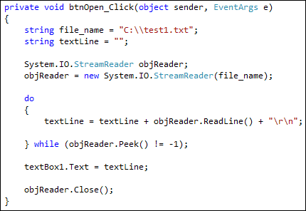

Read a file line by line in C# .NET
Quite often, you'll want to read the contents of a text file line by line, as part of some processing operation. You can then move on to the next line and process that before moving on.
To do that, you need the ReadLine method of the StreamReader object. But it's not quite as straightforward as the ReadToEnd method.
Along with the ReadLine method, you use the Peek method in a Do loop. It sounds complicated, but examine this code:
do
{
textLine = objReader.ReadLine() + "\r\n";
} while (objReader.Peek() != -1);
Inside of the Do loop, we have this:
textLine = objReader.ReadLine() + "\r\n";
The ReadLine method grabs one line from your text file. It's in a loop so that we can grab all the lines, one line at a time. We're just handing the line to a string variable called text_line. (The "\r\n" at the end add a carriage return and a new line.)
The while part of the loop is this:
while (objReader.Peek() != -1);
The Peek method checks one character at a time. If it doesn't find a character it will return a value of minus 1. In which case, we can end the loop. As long as Peek returns a value other than minus one, we keep looping.
Try it out for yourself. Add another button to your form. Double click it to get at the coding window. Add the following code to your new button:

In versions of Windows later than XP you can have these two lines in place of the file_name above:
string fldr ="\\test1.txt";
fldr = Environment.GetFolderPath(Environment.SpecialFolder.MyDocuments) + fldr;
Inside the Do loop, you can write whatever code you need to process the line of text. But all we're doing is building up the txtLine variable. After the loop ends, we're placing it all in the text box.
Before running your programme, though, add another few lines to your text file.
In the next part, you'll see how to write to a text file.